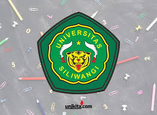
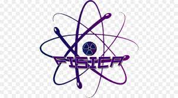

About Me

Saat ini, saya sedang mengejar pendidikan di Universitas Siliwangi dalam bidang Pendidikan Fisika. Sebagai seorang mahasiswa yang antusias dan bersemangat, saya telah aktif terlibat dalam berbagai proyek akademik dan non-akademik. Selain itu, saya juga telah menyelesaikan sejumlah proyek yang telah memperkaya pengalaman dan pengetahuan saya di berbagai bidang. Dalam penjelasan ini, saya akan menguraikan lebih lanjut tentang pendidikan saya, pengalaman proyek, keterampilan, sertifikasi, dan minat saya di bidang teknologi informasi.
Pada saat ini, saya berada dalam tahap pendidikan di Universitas Siliwangi, fokus dalam jurusan Pendidikan Fisika. Pendidikan ini memberikan landasan yang kokoh dalam memahami konsep-konsep dasar fisika, metodologi pengajaran, dan keterampilan praktis yang relevan dengan pendidikan. Selama masa studi saya, saya telah mengembangkan pemahaman yang mendalam tentang prinsip-prinsip fisika serta kemampuan untuk mengajarkan dan menjelaskan materi secara efektif kepada orang lain
Pendidikan

Selama perjalanan pendidikan saya, saya telah berhasil menyelesaikan sejumlah proyek yang mencakup berbagai bidang. Salah satunya adalah pembuatan portofolio web sederhana menggunakan HTML dan Bootstrap 5. Proyek ini membantu saya untuk mempelajari dasar-dasar pembuatan situs web dan penggunaan kerangka kerja Bootstrap untuk meningkatkan responsivitas dan estetika. Selain itu, saya juga telah terlibat dalam proyek-proyek analisis data yang melibatkan penggunaan bahasa pemrograman Python, analisis statistik, dan visualisasi data
Dengan latar belakang pendidikan dan pengalaman proyek saya, saya telah mengembangkan beragam keterampilan di bidang pemrograman dan analisis data. Saya memiliki kemampuan dalam bahasa pemrograman seperti HTML, CSS, JavaScript, dan Python, serta penggunaan berbagai alat dan teknologi seperti Git dan GitHub, Excel, MySQL, Google Colab, dan Google Looker Studio. Keterampilan ini memungkinkan saya untuk menyelesaikan proyek dengan efisien dan efektif, serta memberikan kontribusi yang berarti dalam lingkup kerja saya.
Keahlian
Untuk mengukuhkan keterampilan dan pengetahuan saya, saya telah memperoleh sejumlah sertifikasi di berbagai bidang. Beberapa di antaranya adalah sertifikasi dalam Git dan GitHub, Excel, Data Dasar, HTML, CSS, JavaScript, Python, MySQL, Google Colab, Google Looker Studio, Kecerdasan Buatan, dan Penulisan Konten. Sertifikasi-sertifikasi ini menunjukkan komitmen saya dalam terus belajar dan mengembangkan diri, serta memperkuat kredibilitas saya di pasar kerja.
kalkulus

Kalkulus adalah cabang matematika yang mempelajari perubahan dan perhitungan berkelanjutan. Ini melibatkan konsep dasar seperti turunan dan integral, yang digunakan untuk memodelkan dan menganalisis fenomena dalam berbagai bidang ilmu, termasuk fisika, ekonomi, dan teknik. Kalkulus memungkinkan kita untuk memahami dan memprediksi perilaku sistem dinamis, memecahkan masalah optimasi, dan mengeksplorasi konsep seperti laju pertumbuhan, luas daerah, dan volume benda. Dengan penerapan yang luas dan mendalam, kalkulus menjadi landasan penting bagi banyak disiplin ilmu dan teknologi modern, membuka pintu untuk pemahaman yang lebih dalam tentang dunia yang kompleks ini.
pemrograman
Pemrograman adalah seni dan ilmu dalam membuat program komputer menggunakan bahasa pemrograman. Ini melibatkan pemahaman algoritma, logika, dan sintaksis untuk menciptakan solusi yang efektif dan efisien untuk berbagai masalah. Dalam dunia teknologi modern, pemrograman menjadi keterampilan yang sangat berharga, membuka pintu bagi inovasi, pengembangan aplikasi, dan kemajuan teknologi yang tak terbatas.